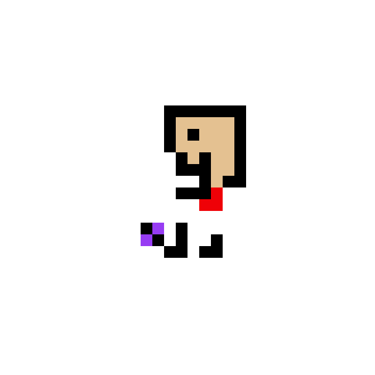
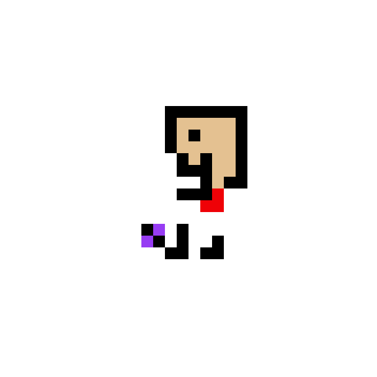

Your Name
Boston University Class of 2026
Joint Computer Science & Economics, Minor in Business Administration & Management


About Me:
I'm a student at Boston University studying Computer Science. I'm currently a member of Hack4Impact@BU & an Innovator at Innovate@BU. I'm excited to learn and make things work in the realms of Technology, Social Impact and Business. I have experience in Problem Solving, Teamwork, and Collaboration. I love to work, but also try not to get bored and love trying other things! I love watching and doing sports like soccer and badminton and arts! Work or Leisure, feel free to contact me at dan.sam.wijaya@gmail.com
My Skills:
- Languages: Python, Android JDK, Java HTML, CSS, React.js, SQL, Python, Excel
- Frameworks/Applications: Agile, Lean, Product Management, GitHub, Git, VSCode, Canva, PostgreSQL, Flask, WordPress, Figma
Relevant Coursework:
- Boston University CS 112: Introduction to Computer Science II
- Boston University DS 100: Data Speak Louder Than Words
- Boston University CS 131: Combinatoric Structures
- Boston University CS 210: Computer Systems
- Boston University CS 132: Geometric Algorithms
- Boston University CS 330: Analysis of Algorithms ongoing
.gif) 
